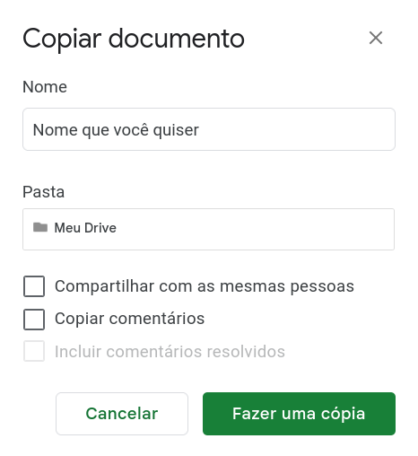

Dentro da Struct, é responsabilidade da GP cuidar do relacionamento entre os membros e a empresa. Dessa maneira, se torna possível a identificação de problemas dentro da empresa antes que eles ocorram. Para cumprir esse objetivo, são realizados, de forma mensal, dois acompanhamentos distintos. O primeiro é chamado de S.P.A.C.E. e consiste em um acompanhamento mais rápido e objetivo por meio do preenchimento de um formulário para se ter uma visão geral da empresa e direcionar um pouco as perguntas do acompanhamento seguinte. O segundo é um acompanhamento pessoal chamado Struct Talk com o intuito de conversar com o membro e coletar os dados de maneira subjetiva. A ideia é que os dados coletados pelos dois acompanhamentos se complementarão por terem naturezas distintas (subjetiva e objetiva) permitindo que a diretoria possa agir diretamente para identificar e solucionar possíveis problemas.
#S.P.A.C.E.
Conhecido originalmente como MAGIC, o SPACE é um formulário mensal com o objetivo de coletar dados dos membros de maneira objetiva e os entregando uma nota de 0 a 10. Cada sigla do SPACE corresponde uma pergunta cada qual com um significado diferente:
S - Significado (Significado)
O seu trabalho te inspira?
P - Pertencimento (Conexão)
Você sente que pertence à Struct?
A - Autonomia (Autonomia)
Você tem liberdade para usar seus talentos e habilidades na Struct?
C - Crescimento (Crescimento)
Você se sente desafiado no que faz na Struct?
E - Efeito (Impacto)
Você sente que seu trabalho faz a diferença na empresa?
Além das 5 perguntas padrão, é recomendável a inclusão de uma ou mais novas perguntas com temas diversos para se coletar informações dos membros. Por exemplo:
Você tem interesse em participar de uma dinâmica de Minecraft?
O que tem achado dos Coding Days?
Quais devem ser as metas da Struct para o final do ano?
Tem interesse em se candidatar a diretor em um semestre futuro?
#Struct Talk
O acompanhamento pessoal é uma conversa franca realizada com cada membro com o objetivo de ouvir suas opiniões acerca da Struct e do seu papel nela. Para isso, é necessário criar perguntas focadas e diretas para extrair o máximo de informação possível para alcançar o objetivo que a empresa tem no momento, por exemplo, entender porque a sinergia ou a produtividade dos membros pode ser baixa. Essas perguntas podem variar de membro para membro e é interessante utilizar a visão geral obtida pelo S.P.A.C.E para criar perguntas mais pertinentes para o contexto atual da empresa. A seguir, estão algumas ideias gerais para as perguntas acompanhadas de alguns exemplos:
Participação nas atividades da empresa
O que fez na Struct nesse último mês?
Se sente satisfeito com a sua participação deste mês nos projetos?
Quais dificuldades você vem sentindo nos projetos que faz parte?
Se sente satisfeito com a sua participação deste mês na diretoria?
Está satisfeito com a sua diretoria? Gostaria de trocar?
Motivação do membro para exercer as atividades da empresa
Sente-se motivado a cumprir suas funções na empresa?
Se sim, o que te motiva?
Relação entre o membro e a empresa
Sente que faz parte de um time na empresa?
Problemas na vida pessoal/faculdade que podem estar afetando o desempenho na Struct
Como está o andamento do seu semestre? Tem alguma matéria que está gostando mais? Tem alguma matéria que está dando mais dor de cabeça?
Gostaria de solicitar uma semana de férias?
Momento feedback, critica ou elogio
Tem algum feedback positivo ou construtivo para algum membro?
Da sua diretoria?
De algum projeto que participou?
Algum externo ao seu trabalho?
#Funcionamento
Primeiramente, divide-se os membros entrevistados entre os membros entrevistadores (os da diretoria). Então, uma pesquisa de disponibilidade é realizada com toda a Struct uma semana antes para marcar o horário do acompanhamento. Cada entrevista terá uma duração de 30 a 50 minutos (de acordo com a fluidez que o acompanhamento está tendo). Essas entrevistas ocorrem a cada dois meses e, para isso, todos os integrantes da GP se organizam para realizarem sozinhos ou em dupla. Se em dupla, um membro é responsável por fazer as perguntas enquanto o outro anota todos os pontos relevantes.
As entrevistas podem ser realizadas tanto virtualmente quanto pessoalmente, desde que haja um diálogo verbal entre os envolvidos. Ao fim das entrevistas, a GP se reúne com o objetivo de debater os principais problemas observados e realizar planos para resolvê-los.
#PDI
O Plano de Densenvolvimento Individual (PDI) é um plano de ação cujo foco é no desenvolvimento pessoal e/ou profissional. A partir do PDI, cria-se um roteiro para tornar possível o aprimoramento das competências individuais por meio de metas, estratégias e prazos. Na GP, a primeira vez em que o PDI é aplicado é quando o membro é efetivado na Stuct e o acompanhamento de sua evolução é feito a cada dois Struct Talks. Nesse sentido, a aplicação é realizada por meio de uma tabela, que pode ser feita tanto em uma folha avulsa quanto em uma tabela virtual, a qual está disponível no drive da GP em Gestão de Pessoas -> PDI -> Tabela PDI e deve ser salva no drive pessoal do participante para o preenchimento.
Para salvar no drive pessoal:
Arquivo -> Fazer uma cópia -> Selecione a pasta “Meu drive” (precisa apertar no “selecionar” quando já estiver no local da pasta).

Tabela PDI
Na tabela existem várias divisões que auxiliarão no estabelecimento de objetivos e na identificação de pontos fracos e fortes. Sendo elas:
Years Challenger
Como você se imagina daqui a X anos?
Dica: Pode ser em qualquer aspecto da sua vida: profissional, acadêmico, relacionamentos, moradia, sonhos, etc.
Exemplo: Aprendendo inglês, aprendendo alguma hard skill/ soft skill, aprendendo a administrar melhor meu tempo.
Duração para aplicação: Oito minutos.
Colabora
Quais ações/atitudes você faz hoje que colaboram para que aconteçam os seus planejamentos para daqui X anos ?
Exemplo: Estudo quatro horas por dia, preencho um planner semanal.
Duração para aplicação: Cinco minutos.
Freia
Quais ações/atitudes você faz hoje que impedem ou retardam os seus planejamentos para daqui X anos ?
Exemplo: Não organizo meu tempo, não tenho prioridades bem definidas.
Duração para aplicação: Cinco minutos.
Objetivo
Quais objetivos você planeja alcançar em 1 ano para ter a vida que você quer daqui a X anos ?
Exemplo: Chegar no nivel intermediário do inglês, concluir 70% do meu curso.
Duração para aplicação: Cinco minutos.
Como
Como você planeja alcançar cada um desses objetivos daqui 1 ano ?
Dica: Se você escreveu cinco objetivos, você vai escrever cinco modos de realizar. Quanto mais específico, melhor.
Exemplo: Quero aprender Inglês e para isso pretendo estudar ao menos três vezes por semana, ou 12 vezes no mês.
Duração para aplicação: Oito minutos.
Quando
Determinar um prazo para concretizar as atividades que você planejou nos seus objetivos.
Dica: Se você escreveu cinco objetivos, você vai escrever cinco prazos.
Exemplo: Quero ler três livros por mês nesse 1 ano, daqui a três meses quero ler ao menos um livro por mês, daqui seis meses, dois livros e em nove meses chegar no meu objetivo. Ou até agosto, etc.
Duração para aplicação: Cinco minutos.
A GP estabeleceu que a referência ideal do PDI seria de 5 anos por funcionar melhor em uma perspectiva de EJ.
#Formulário de Feedback
Uma vez por mês um formulário anônimo de feedback é lançado no canal geral de forma a permitir que os membros tenham um espaço para realizar críticas e elogios aos membros fora do período do Struct Talk. Este formulário fica aberto e fixado no canal geral a todo momento, logo os membros podem enviar seus comentários a qualquer momento. Também é importante reforçar sua existência de tempos em tempos.
#Mural de Feedback
Ao fim de todo o processo de acompanhamento (uma vez a cada dois meses), a GP se reúne para anotar todos os feedbacks recebidos em um mural que será posteriormente exibido para todos os membros. Neste mural, ocultamos o nome da pessoa que enviou o feedback e deixamos apenas o nome de quem recebeu e seus respectivos feedbacks. Em caso de um maior número de feedbacks no mês, o mural de feedbacks pode ser postado de maneira mensal.
Os feedbacks contidos no mural são aqueles coletados no formulário de feedback anônimo e os repassados durante o Struct Talk. Idealmente, deve-se representar os feedbacks no mural exatamente como foram escritos/descritos. Contudo, caso algum feedback possua algum traço na escrita que deixe claro quem foi o autor, este poderá ser alterado levemente pela GP. Outro caso de alteração são as críticas ofensivas a alguém. Neste caso, a GP vai buscar transformar a crítica em construtiva tentando ao máximo manter a intenção original do autor.
Por fim, o mural de feedback será publicado a cada dois meses no geral, podendo ser integrado ao newsletter da empresa.